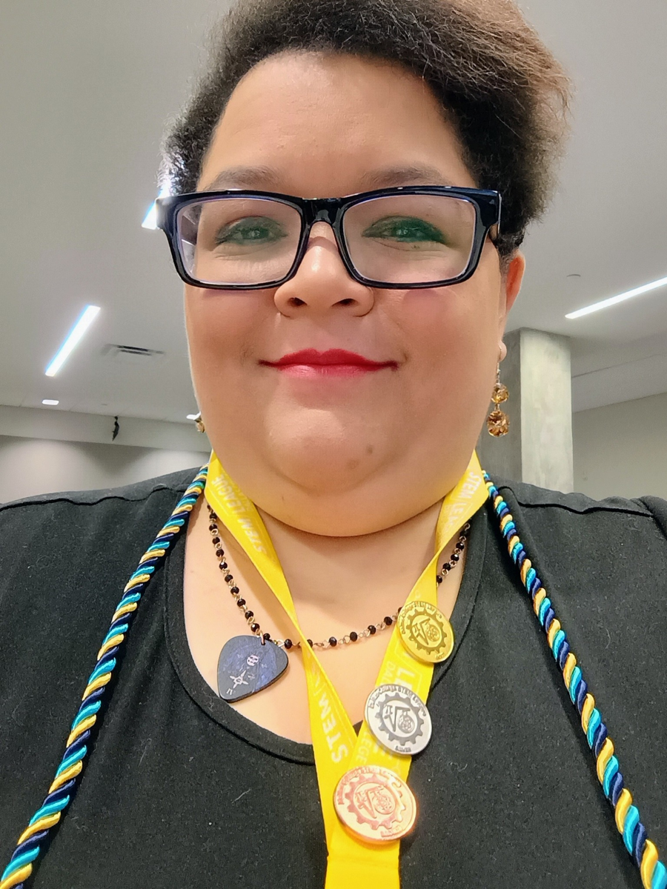

Clarity
Explain the question, assumptions, method, and result so that other people can evaluate the work.
About Crystal
I bring together data analysis, automation, enterprise operations, visual communication, and a long-running interest in technology that improves access and decision-making.

My path
My early work centered on media production, communication strategy, content management, and making complex ideas understandable. That background still shapes how I approach technical work: systems should be usable, evidence should be explainable, and automation should support the people responsible for the outcome.
I returned to school to build deeper preparation in Python, data science, mathematics, GIS, databases, and public health. Since then, I have applied those skills to institutional media storage, nonprofit geocoding, public-data analysis, metadata workflows, and enterprise data-quality operations.
Personal and family healthcare experiences also sharpened my interest in health disparities, reproductive health, accessibility, and responsible AI. My graduate goal is to deepen the computer-science, AI, and statistical foundation needed to study those questions rigorously.
What guides the work
Explain the question, assumptions, method, and result so that other people can evaluate the work.
Design for validation, exceptions, documentation, and the imperfect conditions of real operations.
Keep accessibility, ethics, privacy, and the people affected by a system visible throughout the process.
Beyond data
My earlier writing, multimedia, and video work demonstrates a complementary strength: translating ideas across technical and nontechnical audiences.